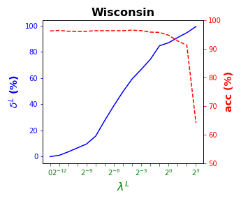
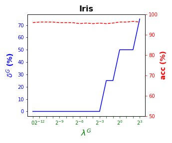

- 変数の 85% を使わずに正解率 95.7%Wisconsin（30 変数）の深さ 1 の木。罰則なしの 96.2% から 1 ポイント未満の低下で済んだ（論文 Table 2）。
- Iris で変数の 75% を除く木全体のまばらさの罰則を強めても、正解率は 95.9% から 96.2% と変わらなかった（深さ 2、論文 Table 4）。
- L∞ 罰則で木全体の変数を選ぶ1 つの変数のすべての分岐での係数をまとめて 0 に縮め、その変数を木から外す。貪欲法の CART では、木全体で使う変数を直接は制御できない。
軸に平行な木は分岐ごとには最もまばらだが、深くなると木全体では多くの変数を使い、斜めの木は分岐ごとにもすべての変数を使いうる
CART の分岐は 1 つの変数だけを使うので、各分岐は最もまばらで（論文の言う局所的なまばらさ）、分岐ごとには読みやすい。しかし木が深くなると、分岐をすべて合わせて多くの変数を使うことになり、木全体のまばらさ（大域的なまばらさ）は良くない。論文によれば、木全体のまばらさは CART やランダムフォレストのような貪欲な構築では扱えず、文献でも適切に扱われてこなかった。
一方、木全体を最適化する最適分類木、とくに斜めの分岐の木は精度が高い。斜めの分岐は軸に平行な分岐に伴う整数変数も要らないので、学習時間も短い。その代わり、各分岐にすべての変数が入りうるので解釈しにくくなる。この論文は整数変数のない連続最適化で斜めの木を学ぶ ORCT を出発点に、この解釈しにくさを LASSO と同じく正則化で抑える。
係数ごとの L1 罰則で分岐ごとの変数を減らし、変数ごとの L∞ 罰則で木全体から変数を外す
ORCT では、分岐ノード \(t\) で個体 \(\boldsymbol x\) が左に進む確率を \(F(\boldsymbol a_{\cdot t}^\top \boldsymbol x / p - \mu_t)\) とし、葉に着く確率から誤分類のコストの期待値 \(g(\boldsymbol a, \boldsymbol\mu, \boldsymbol C)\) を計算する。係数を変数 \(j\)（行）× 分岐ノード \(t\)（列）の行列 \(\boldsymbol a\) に並べ、S-ORCT（Sparse ORCT）は次の問題を解く。
制約は ORCT と同じで、各葉に 1 つのクラス、各クラスに少なくとも 1 つの葉を割り当て、\(a_{jt}, \mu_t \in [-1, 1]\) とする。L1 の項は木のすべての分岐の係数を 1 つずつ罰するので、分岐ごとに使う変数が減る。L∞ の項は変数 \(j\) の行の最大値を罰するグループ罰則で、その変数の係数をすべての分岐でまとめて縮めるので、変数が木全体から外れる（図1）。深さ 1 では分岐が 1 つなので、2 つのまばらさは一致する。
ノルムの項は微分できないが、\(a_{jt} = a_{jt}^+ - a_{jt}^-\)（\(a_{jt}^\pm \in [0, 1]\)）と分け、\(\beta_j \ge a_{jt}^+ + a_{jt}^-\) を満たす補助変数 \(\beta_j\) を置くと、目的関数は \(g + \lambda^L \sum_{j,t}(a_{jt}^+ + a_{jt}^-) + \lambda^G \sum_j \beta_j\) となり、なめらかな問題として標準的な連続最適化の解法で解ける。ORCT と同じく、葉のクラスの変数 \(C_{kt}\) は \([0, 1]\) に緩めても 0/1 の最適解が存在する（定理 1）。各クラスの正解率の期待値に下限を課す ORCT の制約もそのまま使える。
罰則の係数がある値を超えると、すべての係数が 0 の木が停留点になり、論文はこの上限を与える
\(\lambda^L, \lambda^G\) を十分大きくすると、係数はすべて 0 に縮み、変数を 1 つも使わない木になる。このとき個体がどのクラスに割り当てられる確率は \(\boldsymbol x\) によらず、クラスの分布しか使えない。論文は \(\sigma \in [0, 1]\) について、\(\lambda^L\) が \((1 - \sigma)\) × \(\nabla_{\boldsymbol a_{j\cdot}} g(\boldsymbol 0, \boldsymbol\mu, \boldsymbol C)\) の \(\infty\) ノルムの最大値以上、\(\lambda^G\) が \(\sigma\) × 同じ勾配の 1 ノルムの最大値以上なら、\(\boldsymbol a^* = \boldsymbol 0\) が S-ORCT の停留点になることを示した（定理 2）。深さ 1・2 クラスの木では、この上限をデータの和で書ける、より強い結果も示している。次の条件を満たせば \(\boldsymbol a_{\cdot 1}^* = \boldsymbol 0\) が停留点になる（定理 3）。
UCI の 18 データで、2 クラスは深さ 1、3〜4 クラスは深さ 2 の木を、17 × 17 の罰則の組で学習した
UCI の 18 データ（2 クラスが 12 個、3〜4 クラスが 6 個）を使い、小さな木にするため、2 クラスでは深さ 1、3〜4 クラスでは深さ 2 に限った。75% で学習し、25% でテストすることを 10 回繰り返して平均した。ロジスティック関数で \(\gamma = 512\)、誤分類のコストは等しくし、各クラスの正解率の下限 \(\rho_k = 0.1\) を課した。\(\lambda^L\) は 0 と \(2^r/(p|\tau_B|)\)、\(\lambda^G\) は 0 と \(2^r/p\)（どちらも \(r = -12, \dots, 3\)）の 17 通りずつとし、ひとつ前の組の 20 個の解を次の組の初期値に使う。IPOPT で 1 つの初期値から解く時間は、Monks-1 の 0.33 秒から Thyroid の 22.27 秒だった。
まばらさは 2 つの割合で測る。\(\delta^L\) は分岐ごとに使わなかった変数の割合の平均、\(\delta^G\) は木のどの分岐でも使わなかった変数の割合である。
分岐ごとのまばらさも木全体のまばらさも、正解率をほとんど落とさずに高められた
分岐ごとのまばらさ（\(\lambda^G = 0\)）：\(\lambda^L\) を大きくするほど \(\delta^L\) は増える。最も高い正解率はすべての変数を使うときではなく、一部の変数を外したときに出ることもあった。たとえば Pima ではまばらさが 9〜25%、Ionosphere では 87% のときである。Creditapproval では変数 1 つだけでも高い正解率になった。正解率を少し失う代わりに大きくまばらにできたデータもあり、Banknote、Spam、Balance、Wisconsin では、正解率の低下がそれぞれ 1、4、6、1 ポイント未満で、\(\delta^L\) が 25%、52%、63%、85% に達した。
| \(\lambda^L\) | Wisconsin \(\delta^L\) | 正解率 | Creditapproval \(\delta^L\) | 正解率 | Spam \(\delta^L\) | 正解率 |
|---|---|---|---|---|---|---|
| 0 | 0 | 96.2 | 1 | 84.1 | 0 | 89.8 |
| \(2^{-3}\) | 67 | 96.3 | 62 | 86.1 | 52 | 86.1 |
| \(2^{-1}\) | 85 | 95.7 | 95 | 86.3 | 82 | 78.6 |
| \(2^{1}\) | 91 | 92.7 | 97 | 86.7 | 100 | 60.4 |
表1 深さ 1 の S-ORCT の \(\delta^L\) とテスト正解率（%、論文 Table 2 から 3 データ・4 行を抜粋）。
木全体のまばらさ（\(\lambda^L = 0\)、深さ 2）：\(\lambda^G\) を大きくするほど \(\delta^G\) は増える。Iris と Seeds では、すべての変数を使うときと同程度の正解率のまま、変数のそれぞれ 75% と 29% を外せた。Wine では \(\delta^G\) が 15〜23% のときに正解率が最も高かった。Balance では正解率の低下を 10 ポイント未満に抑えて変数の 25% を外せた。Car は変数の半分を使って正解率 80% 前後を保ち、不均衡な Thyroid はどの \(\lambda^G\) でも正解率が 90% を超えた。2 つの罰則を同時にかけると、\(\lambda^L\) の小さな変化で \(\delta^L\) はすぐに増える一方、同じ範囲の \(\lambda^G\) では \(\delta^G\) の増え方がゆるやかだった。


CART との比較：軸に平行な分岐の CART は分岐ごとのまばらさでは最良なので、正解率と木全体のまばらさで比べた。同じ 10 回の分割で CART を学習し、各 \(\lambda^G\) について対応のある t 検定（有意水準 5%）を行った。Creditapproval と Thyroid を除くと、\(\lambda^G\) が小さいうちは S-ORCT が正解率で CART に有意に勝つか同程度で、木全体のまばらさでは CART が有意に勝つか同程度だった。\(\lambda^G\) を大きくすると、正解率と引き換えに、木全体のまばらさで S-ORCT が CART と同程度になり、やがて上回った。
連続最適化による斜めの木に、木全体で使う変数を減らす罰則を加えた研究で、得られる木は局所解である
- 何を最適にするか：深さを固定した ORCT の誤分類コストの期待値に、L1 と L∞ の罰則を加えた非凸の連続最適化問題を、IPOPT で 20 個の初期値から解く。得られるのは局所解で、大域的な最適性は証明しない。
- ほかの方法との違い：論文は、木全体のまばらさは貪欲法では扱えないとし、変数の重要度で分岐の基準を罰する方法（Deng と Runger）を、木全体のまばらさに取り組んだ試みとして挙げている。斜めの分岐をまばらにする L1 罰則は TAO（2018）も使うが、そこでの罰則はノードごとに分かれた \(\lambda \sum_i \|\boldsymbol w_i\|_1\) で、変数を木全体から外す L∞ の項はない（解説者の注）。
- 今後の拡張：結論では回帰の木への拡張、カテゴリ変数のダミー変数を L∞ 罰則で全分岐にわたってまとめて扱うこと、まばらさを保つバギングを挙げている。回帰の木への拡張は Sparse ORT（2022）で行われた。
@article{blanquero2020sparsity,
title = {Sparsity in optimal randomized classification trees},
author = {Blanquero, Rafael and Carrizosa, Emilio and Molero-R{\'\i}o, Cristina and Romero Morales, Dolores},
journal = {European Journal of Operational Research},
volume = {284},
number = {1},
pages = {255--272},
year = {2020},
doi = {10.1016/j.ejor.2019.12.002}
}
ページの数値と図は arXiv 2002.09191 v1（journal-ref に European Journal of Operational Research 2019 とある改訂稿）による。出版社（Elsevier）の掲載版の本文は確認していない。書誌情報は Crossref による（掲載号は 2020 年 7 月）。所属は arXiv 版の表記。